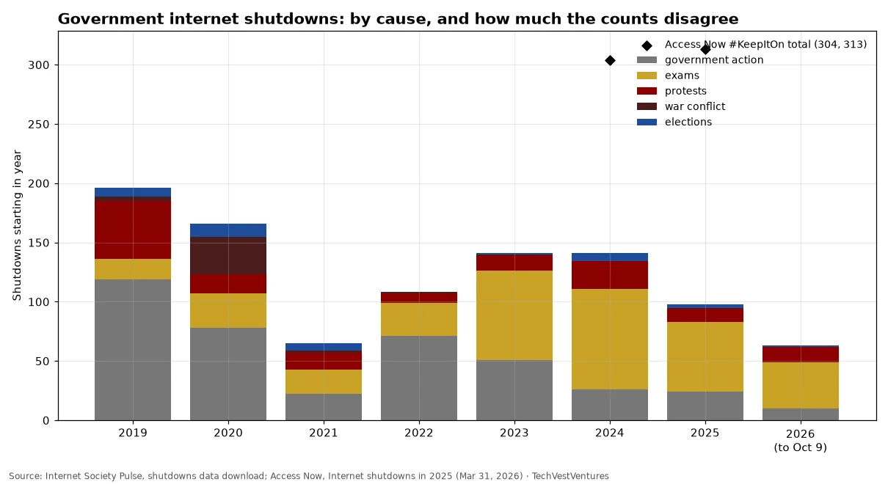
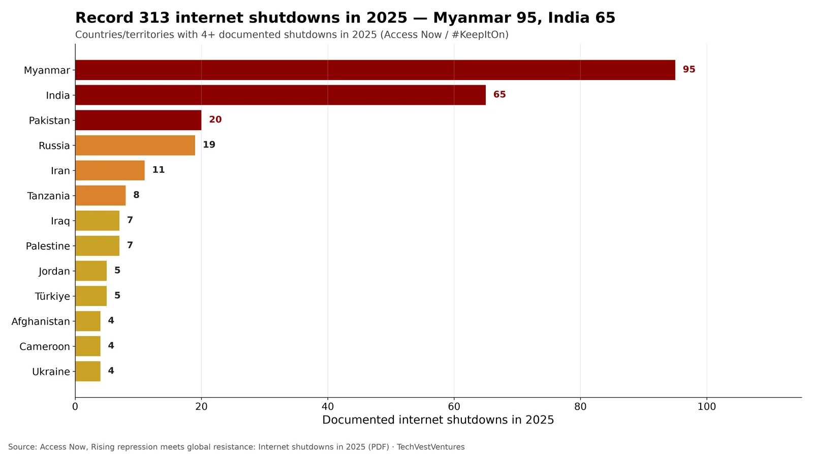

Q2. Shutdowns

Internet Society Pulse logs 98 shutdowns in 2025 and 63 so far in 2026 (latest: a Delhi mobile-internet cut during protests on Oct 9-10, which Pulse lists as unconfirmed). Exams are a surprisingly large cause (Iraq and Syria cut the internet nationally for school tests). But Access Now's #KeepItOn coalition, using broader criteria, recorded a record 313 shutdowns in 52 countries in 2025, up from 304 in 2024, with Myanmar (95) the top offender and conflict the leading trigger (40%). The gap between the two counts is largely a matter of definitions and verification standards, so neither number alone is 'the' total.
Sources: Internet Society Pulse, shutdowns data download Access Now, Internet shutdowns in 2025 (Mar 31, 2026)

Access Now and the #KeepItOn coalition’s 2025 annual report (published 2026) documented at least 313 internet shutdowns in 52 countries, above the previous records of 304 in 2024 and 289 in 2023. The chart shows every country or territory with four or more documented shutdowns. Myanmar (95) and India (65) together account for 160 incidents, just over half of the global total. The 13 names shown sum to 254; the remaining 59 shutdowns were spread across the other countries in the 52-country tally. Conflict was the leading trigger for a third year: 125 conflict-related shutdowns in 14 countries, 40% of the 2025 total. The report says not a single day of 2025 passed without at least one shutdown.
- 70 shutdowns were linked to grave human rights abuses (violence coinciding with a verified shutdown).
- Authorities targeted low-Earth-orbit satellite internet 14 times across seven countries in 2025, up from 4 such cases in 2024.
- 75 shutdowns in 33 countries persisted from 2025 into 2026. People in 100 countries have experienced a shutdown since tracking began in 2016.
- The same report notes India’s 65 shutdowns were its lowest total since 2017, even as the global count set a record.
Note: These are coalition-documented incidents, not a government statistical series. Access Now says some earlier-year shutdowns were added retroactively as new information arrived, and that unreported cases mean totals are likely incomplete. Seven countries/territories marked with an asterisk in the report (including Myanmar, Russia, Palestine, Ukraine and Yemen) include cross-border shutdowns imposed from outside their borders. Counts can disagree with technical outage measurers such as NetBlocks or IODA, and with governments that describe outages as infrastructure damage rather than deliberate shutdowns. C2 previously documented that source disagreement.
Sources: Access Now, Rising repression meets global resistance: Internet shutdowns in 2025 (PDF)